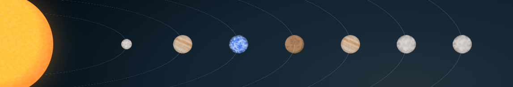

XAR'THAI HAUPSTERN
- Klasse: G
- Spektraltyp: 2
- Luminosität: V
- Xar’Thai Traits: Hauptsequenz-G-Stern; aktive solare Phase
- Raumphänomene: Ionenstorm Typ 1 (mit variabler Intensität)
- Orbitaler Charakteristik: Planetare Bahnen liegen in einer Ebene mit geringer Exzentrizität; ansteigende Orbitaler Radien
- Magnetosphäre: Starke Magnetosphäre mit regelmäßigen Sonnenwinden, die die inneren Planeten beeinflussen
PLANETEN
- Xar’Thai 1: Innerer Planet; Klasse D (Steinig); Monde: 1
- Masse: 3.58 * 10^24 kg
- Radius: 6116 km
- Orbitaler Radius: 0.4 AE
- Xar’Thai 2: Innerer Planet; Klasse I (“Heißer Jupiter”); Monde: 4
- Masse: 1.90 * 10^27 kg
- Radius: 60768 km
- Orbitaler Radius: 0.7 AE
- Xar’Thai 3: Habitable Zone; Klasse M (Terrestrisch); Monde: 1; bewohnt von Xar’Thaianern
- Masse: 3.58 * 10^24 kg
- Radius: 5101 km
- Orbitaler Radius: 1.0 AE
- Xar’Thai 4: Habitable Zone; Klasse P (Gletscher); Monde: 0
- Masse: 8.96 * 10^24 kg
- Radius: 6371 km
- Orbitaler Radius: 1.8 AE
- Xar’Thai 5: Äußere Welt; Klasse J (Gasriese); Monde: 4; System kleinerer Monde
- Masse: 2.38 * 10^27 kg
- Radius: 67917 km
- Orbitaler Radius: 3.0 AE
- Xar’Thai 6: Äußere Welt; Klasse Q (Pluto-artig); Monde: 0
- Masse: 5.37 * 10^24 kg
- Radius: 6690 km
- Orbitaler Radius: 5.2 AE
- Xar’Thai 7: Äußere Welt; Klasse Q (Pluto-artig); Monde: 0
- Masse: 4.78 * 10^24 kg
- Radius: 6371 km
- Orbitaler Radius: 7.1 AE